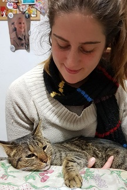

Soy Rocio, y estoy aprendiendo a programar. Denme un poco de tiempo y prometo hacer que esta página se parezca cada vez menos a la del Sr. X.
Sobre mí
Soy comunicadora y profe. Me gusta la radio y la sección "explorar" de mi Instagram está llena de gatitxs. Creo que los memes están salvando a nuestra generación de la depresión crónica.

Esta semana recomiendo:
El Ovario Anarco
Colectiva de comunicación feminista manifestada en distintos soportes. A veces hacemos podcasts, otras programa de radio, siempre en las redes.
Creemos en la red
Es un proyecto de educación popular en informática que dicta talleres online para quienes quieran aprender a programar.